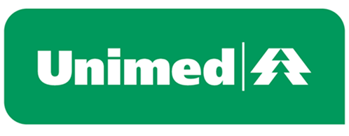
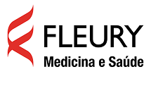
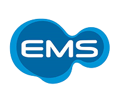

patrocinadores
empresas que acreditam no poder da solidariedade e apoiam a doação de sangue
juntos salvamos vidas!
Nossos patrocinadores tornam possível levar informação, conscientização e incentivo à doação de sangue para cada vez mais pessoas. Ao apoiar o Sangue Bom, essas empresas demonstram seu compromisso com a responsabilidade social e ajudam a fortalecer uma rede que salva vidas diariamente.
patrocinador master

unimed
A Unimed acredita que promover a saúde também significa incentivar ações que salvam vidas. Por isso, apoia o projeto Sangue Bom na missão de conscientizar a população sobre a importāncia da doação de sangue e ampliar o alcance dessa causa.
dasa
Maior rede integrada de saúde do Brasil, a Dasa apoia iniciativas que promovem prevenção, qualidade de vida e acesso à informação, fortalecendo campanhas de impacto social

Grupo Fleury
Com foco em inovação e excelência na saúde, o grupo Fleury incentiva ações que aproximam as pessoas do cuidado com a vida e da importância da doação de sangue.

EMS
Hà mais de seis décadas, a EMS investe em saúde, pesquisa e bem-estar, apoiando projetos que contribuem para uma sociedade mais saudàvel e solidária.
RaiaDrogasil
RaiaDrogasil
Comprormetida com a promoção da saúde e do bem-estar, a RaiaDrogasil participa de iniciativas sociais que incentivam hábitos saudáveis e fortalecem ações de solidariedade.
eurofarma
A Eurofarma acredita que cuidar da saúde também é incentivar atitudes que transformam vidas. Seu apoio ao Sangue Bom reforça esse compromisso.
hospital albert Einstein
Reconhecido pela excelência em assistência médica, ensino e pesquisa, o Hospital Albert Einstein apoia projetos que promovem saúde, cidadania e qualidade de vida.
seja um patrocinador
sua empresa também pode fazer parte dessa corrente do bem e impactar milhares de vidas.